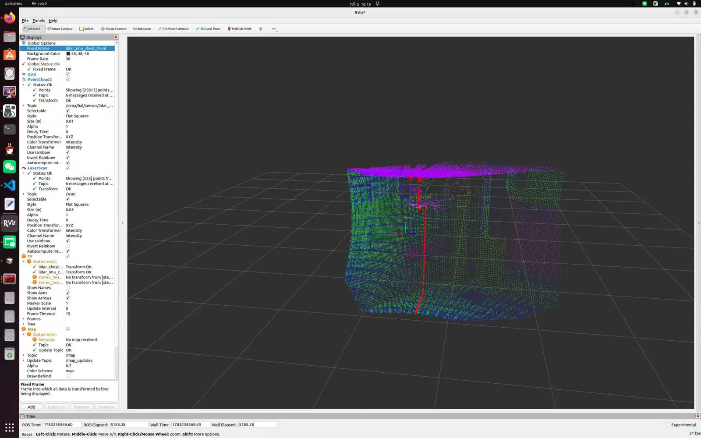

SLAM & Robotic Mapping
OMMTEC / Research direction 04
Understanding space through localization and mapping.
SLAM mapping is part of our robotics work. SLAM stands for simultaneous localization and mapping: estimating a robot’s position while building a map of its surroundings.
Mapping work
Our workflow brings robot sensor data into RViz so that we can inspect spatial coverage, coordinate alignment, and the structure reconstructed from point-cloud measurements.
Project documentation is being expanded as mapping experiments and evaluation results become available.
Contact the team